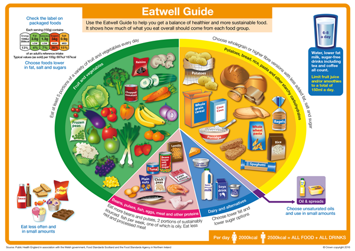
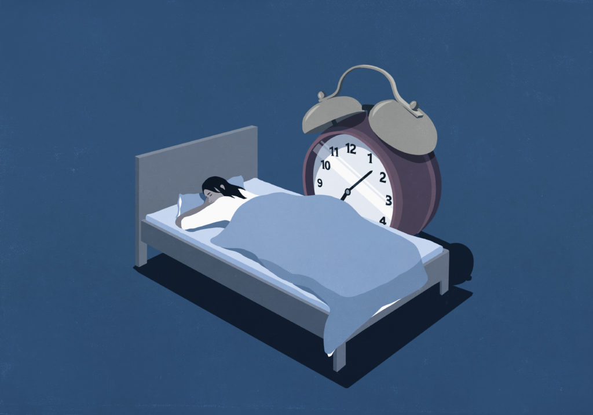
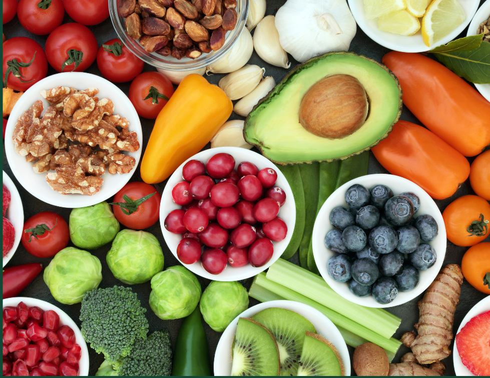

Gallery Page for Nutrition
1 / 6

Exercise is crucial for maintaining a healthy body and mind. Regular physical activity improves cardiovascular health by strengthening the heart, enhancing blood circulation, and reducing the risk of diseases like heart attacks and strokes. Exercise also helps manage body weight by burning calories and boosting metabolism. It strengthens muscles and bones, improves flexibility, and enhances overall physical endurance. Beyond physical benefits, exercise has a significant impact on mental health. It reduces stress, anxiety, and depression by releasing endorphins, often referred to as "feel-good" hormones. Exercise also improves sleep quality, energy levels, and cognitive functions, such as focus and memory. In essence, exercise is a cornerstone of a balanced lifestyle, promoting long-term health and well-being.
2 / 6

Sleep is a fundamental aspect of maintaining overall health and well-being. During sleep, the body undergoes critical restorative processes, such as repairing tissues, boosting immune function, and consolidating memories. Adequate sleep helps regulate hormones, including those that control stress and appetite, which are vital for maintaining a healthy weight and emotional balance. Furthermore, proper sleep enhances cognitive functions like focus, problem-solving, and decision-making, allowing individuals to perform better in daily activities. Chronic sleep deprivation, on the other hand, can lead to a range of health issues, including weakened immunity, heart disease, and mental health challenges such as anxiety and depression. In essence, sleep is not just a period of rest but a crucial time for the body and mind to rejuvenate and prepare for the demands of the next day.
3 / 6

Food is essential for providing the body with the necessary nutrients and energy it needs to function properly. It fuels our daily activities, supports growth, and maintains bodily functions such as digestion, immune response, and cell repair. A well-balanced diet ensures that we receive vitamins, minerals, protein, fats, and carbohydrates, each playing a specific role in keeping our body healthy. For example, proteins help in tissue repair and muscle building, while carbohydrates provide energy for physical activity and brain function. Proper nutrition strengthens the immune system, improves mental clarity, and helps manage weight. Without adequate food, the body cannot function optimally, leading to fatigue, weakened immunity, and various health problems.
4 / 6

Sleep helps the body and mind by providing essential restorative processes that are crucial for overall health. During sleep, the body repairs tissues, builds muscles, and strengthens the immune system, helping to fight off infections and illnesses. It also plays a vital role in brain function, enhancing memory consolidation, learning, and problem-solving skills. Sleep helps regulate hormones that control appetite, stress, and energy levels, which are important for maintaining physical and mental balance. Additionally, it reduces stress and improves mood, contributing to better emotional well-being. In short, sleep rejuvenates the body and mind, preparing us to function effectively and stay healthy.
4 / 6

Exercise helps the body and mind by promoting overall health and well-being. Physically, it strengthens the heart, improves blood circulation, and enhances lung capacity, which reduces the risk of cardiovascular diseases. It also builds muscle strength, improves bone density, and increases endurance, helping individuals perform daily activities with ease. Exercise boosts metabolism and helps maintain a healthy weight, preventing obesity-related health issues. Mentally, it reduces stress, anxiety, and depression by releasing endorphins, which are natural mood enhancers. Additionally, regular physical activity improves sleep quality, enhances focus, and sharpens memory. In summary, exercise is essential for a balanced and healthy lifestyle.
6 / 6

Food helps the body by providing essential nutrients and energy needed for various functions. Nutrients like carbohydrates, fats, and proteins give the body the fuel it requires to perform physical activities, maintain bodily functions, and keep organs working properly. Carbohydrates provide energy for both the body and brain, while proteins are vital for muscle growth, tissue repair, and immune function. Fats support brain health, hormone production, and cell structure. Vitamins and minerals, found in fruits, vegetables, and other foods, help strengthen the immune system, support healthy bones, and regulate metabolism. In essence, food is the building block for maintaining health, growth, and energy, enabling the body to function optimally.